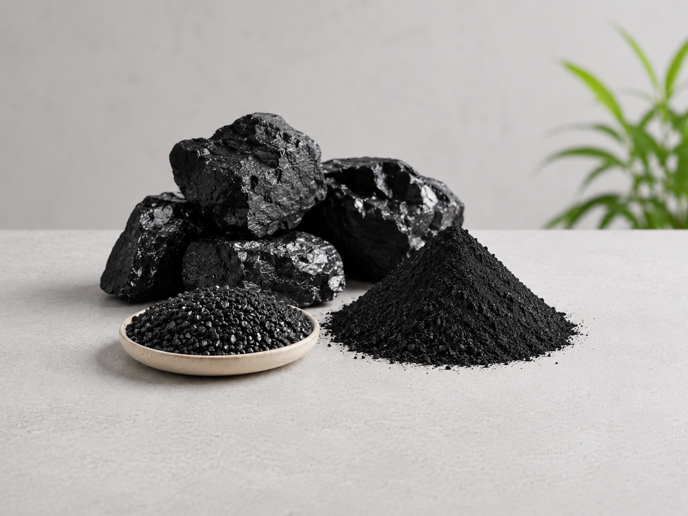

Stabilizes Boreholes and Excavation Walls
KORVANTO BENTO™
KORVANTO BENTO CIVIL
High-Yield Bentonite for Piling, Diaphragm Walling, HDD & Civil Engineering Applications

Export ReadyOverview
Product Overview
KORVANTO BENTO CIVIL is a premium-grade sodium bentonite specially engineered for civil engineering, foundation, and construction projects. Processed from high-quality bentonite and optimized for superior rheological performance, it develops a stable thixotropic slurry that provides excellent excavation support, borehole stabilization, and seepage control.
When mixed with water, it forms a high-yield suspension capable of penetrating soil voids, sealing permeable formations, and creating a protective filter cake that stabilizes excavation walls. Its exceptional water absorption, swelling capacity, and gel strength make it ideal for demanding piling, trenching, tunneling, and foundation applications.
Designed for modern construction projects, KORVANTO BENTO CIVIL delivers reliable performance, improved operational efficiency, and reduced excavation risks.
Performance
Key Benefits
Reduces Risk of Collapse During Construction
Improves Cutting Carrying Capacity
Forms Effective Filter Cake for Seepage Control
Lubricates and Cools Drilling Equipment
Enhances Drilling and Excavation Efficiency
Supports Deep Foundation Construction
Suitable for Diverse Ground Conditions
Delivers Consistent Performance on Large Infrastructure Projects
Industry Use
Applications

Looking for a Reliable Industrial Mineral Supply Partner?
Share your specifications, application requirements and destination country.
Our team will recommend suitable grades, packaging options and export solutions for KORVANTO BENTO CIVIL.